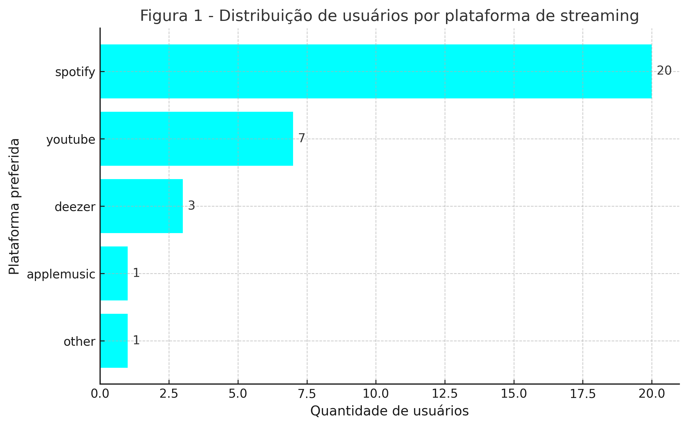
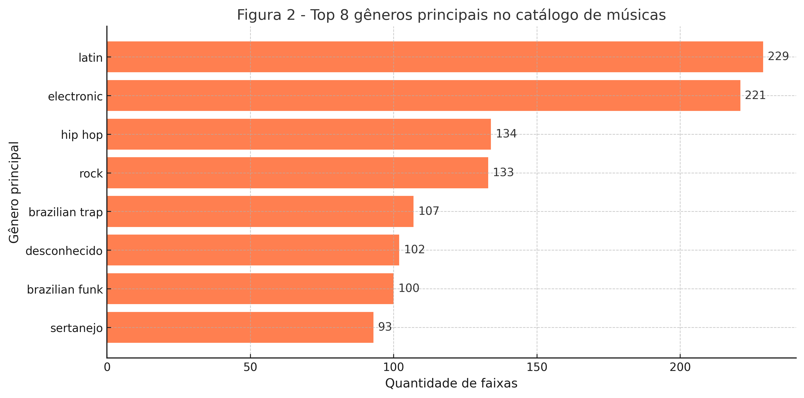
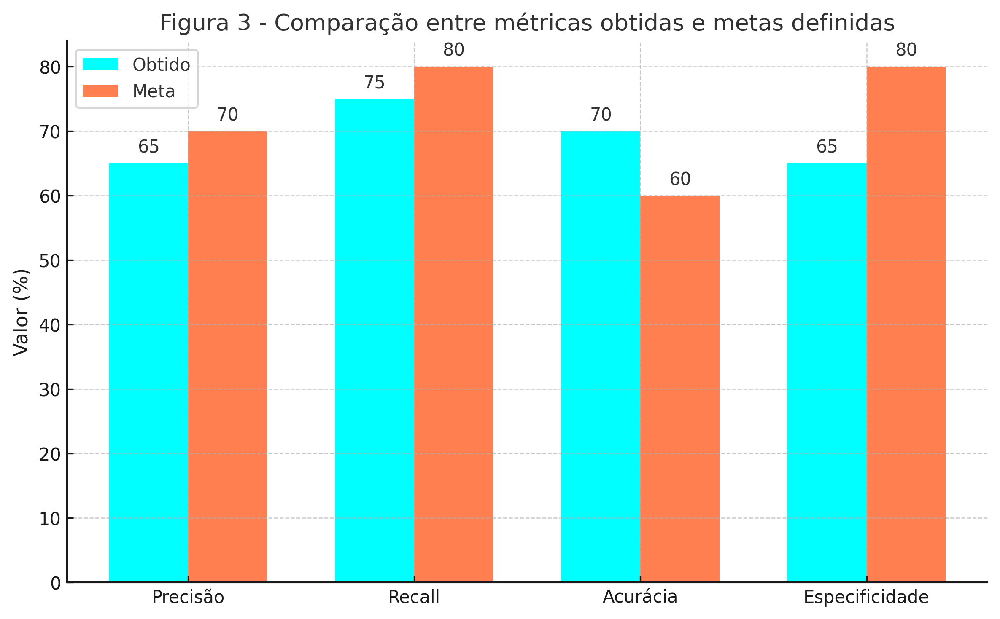
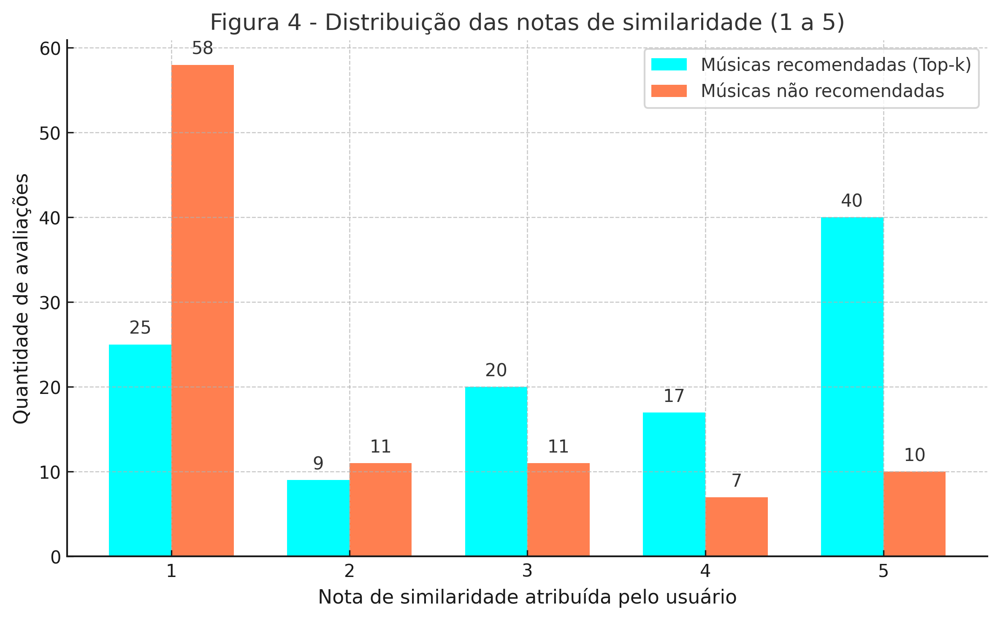
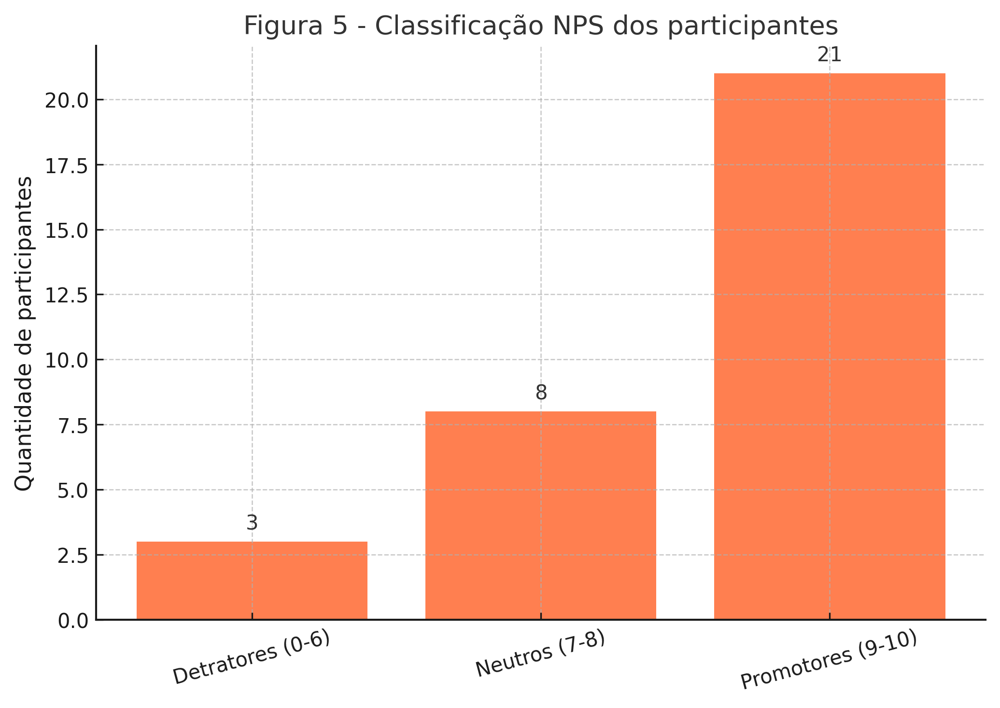

Clique em qualquer gráfico abaixo para expandir e visualizar em detalhes.

Figura 1: Distribuição de usuários por plataforma de streaming

Figura 2: Top 8 gêneros principais no catálogo de músicas

Figura 3: Comparação entre métricas obtidas e metas definidas

Figura 4: Distribuição das notas de similaridade (1 a 5)

Figura 5: Classificação NPS dos participantes